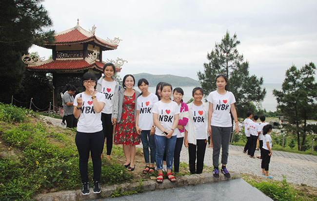
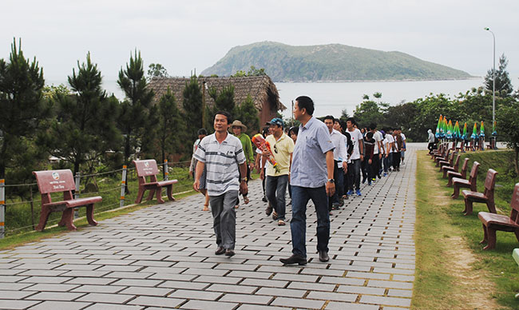
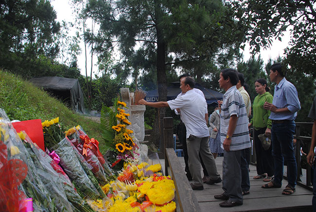
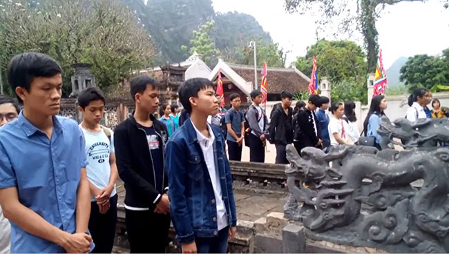
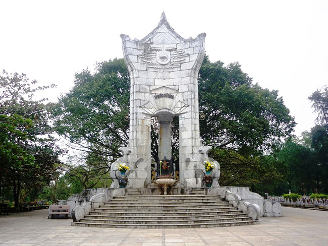

Ninh Bình 2017 - Hành trình chinh phục những đỉnh cao

Lần cập nhật cuối lúc Thứ bảy, 29 Tháng 4 2017 08:10 Viết bởi Administrator Thứ bảy, 29 Tháng 4 2017 08:00
Kỳ thi học sinh giỏi của khối các trường chuyên vùng duyên hải và đồng bằng Bắc bộ được tổ chức vào tháng Tư hàng năm thực sự là một “cuộc đua trí tuệ” cho dành các học sinh trường chuyên khối lớp 10 và 11. Nhận thức được ý nghĩa của sân chơi này, trường THPT chuyên Nguyễn Bỉnh Khiêm đã chính thức tham gia kỳ thi thường niên này từ năm 2013 và đã có được những thành công đáng kể.

Vừa qua, đúng vào lúc 6 giờ 30 phút ngày 13 tháng 4 năm 2017, 54 học sinh xuất sắc của khối lớp 10 và 11 trường THPT chuyên Nguyễn Bỉnh Khiêm đã khởi động hành trình về vùng đất cố đô Ninh Bình với khát vọng chinh phục những đỉnh cao.
Trên đường đi, ngang qua tỉnh Quảng Bình, đoàn đã ghé vào Vũng Chùa – Đảo Yến để viếng mộ Đại tướng Võ Nguyên Giáp. Giữa mênh mông trời biển thanh bình, tất cả giáo viên và học sinh trong đoàn đã xếp hàng trang nghiêm lên mộ thắp hương và thành kính tưởng niệm vị anh hùng kiệt xuất của dân tộc, mong Người đời đời yên nghỉ giữa niềm biết ơn và kính yêu vô hạn của những người dân đất Việt.


Ngày 14 tháng 4 năm 2017, đoàn đã đặt chân đến cố đô Ninh Bình, bắt đầu chuẩn bị tâm thế để bước vào một cuộc đua không ít cam go. Đúng vào lúc 14 giờ ngày 15 tháng 4 năm 2017, hơn 1700 học sinh từ 40 trường chuyên bắt đầu đặt bút làm bài thi. Giáo viên các đoàn theo sự phân công đã tập trung thảo luận đáp án để chuẩn bị cho công tác chấm thi. Đúng 17 giờ, kết thúc thời gian làm bài thi, rời khỏi phòng thi là những gương mặt tràn ngập biết bao cảm xúc: vui vẻ phấn khích, phấp phỏng lo âu, băn khoăn lo lắng… Cuộc thi này thực sự không chỉ là một thử thách về trí tuệ mà còn là một trải nghiệm tuyệt vời trong cảm xúc. Và điều đó không chỉ dành cho các thí sinh. Các thầy cô cũng “thăng trầm” theo vui buồn của học trò…
Ngày 16 tháng 4 năm 2017, công tác chấm thi đã diễn ra từ 7 giờ đến 11 giờ trong không khí làm việc nghiêm túc, có tính tổ chức cao. Và buổi sáng ngày hôm đó, trong khi giáo viên làm công tác chấm thi, 54 học sinh trường THPT chuyên Nguyễn Bỉnh Khiêm đã có một cuộc hành trình đầy ý nghĩa đến cụm di tích cố đô Hoa Lư, kinh đô đầu tiên của nhà nước phong kiến Việt Nam thế kỷ X. Tại đây, trong không khí trang nghiêm, đoàn đã làm lễ dâng hương tưởng nhớ vua Đinh Tiên Hoàng, vị hoàng đế đầu tiên của Việt Nam sau thời Bắc thuộc, vị hoàng đế đặt nền móng sáng lập nhà nước phong kiến trung ương tập quyền đầu tiên ở Việt Nam. Tại đất xưa lịch sử, đoàn học sinh đã được nghe về cuộc đời và công đức của Đinh Tiên Hoàng, từ thuở “cờ lau tập trận” đến khi dựng cờ khởi nghĩa, thống nhất sơn hà xã tắc, để “Đại Cồ Việt sánh ngang hàng với Bắc Tống” lúc bấy giờ. Đoàn cũng đã thành kính dâng lên lời hứa sẽ phấn đấu rèn luyện để trở thành “chủ nhân đất nước Việt Nam ngàn đời văn hiến”.

Sau đó, đoàn rời Hoa Lư quay về chùa Bái Đính dự lễ tổng kết hội thi tại Trung tâm hội nghị quốc tế vào lúc 14 giờ. Buổi lễ tổng kết đã diễn ra rất long trọng với sự chuẩn bị chu đáo của trường THPT chuyên Lương Văn Tụy, Ninh Bình. Và kết quả, trường THPT chuyên Nguyễn Bỉnh Khiêm đã thực sự xuất sắc khi giành được 52 giải thưởng với 54 học sinh tham gia, trong đó có 5 huy chương vàng, 14 huy chương bạc, 22 huy chương đồng, 11 giải khuyến khích, và đã được xếp thứ 11 trong số 40 trường tham gia cuộc thi, thành tích cao nhất kể từ khi tham gia vào “sân chơi trí tuệ” này.
Thành tích đạt được thực sự là một niềm vui lớn. Đó là kết quả xứng đáng cho những nỗ lực không mệt mỏi của các thầy cô giáo và học sinh trong các đội tuyển trong suốt một thời gian dài. Tất cả đã thực sự thể hiện hết mình vì “màu cờ sắc áo” THPT chuyên Nguyễn Bỉnh Khiêm.
Ngày 17 tháng 4 năm 2017, với niềm vui chiến thắng, đoàn đã khởi hành trở về Quảng Nam. Trên đường về, ngang qua tỉnh Quảng Trị, đoàn đã ghé vào dâng hương tại nghĩa trang liệt sĩ Trường Sơn. Tại đây, giữa núi rừng bạt ngàn linh thiêng, với một niềm tri ân sâu sắc, đoàn đã cúi đầu tưởng niệm những anh hùng liệt sĩ đã hi sinh tuổi thanh xuân của mình vì Tổ quốc thân yêu.

Đúng 17 giờ, đoàn đã về đến trường trong sự chào đón nồng nhiệt. Những ánh mắt hân hoan, những niềm vui rạng ngời trên từng gương mặt. Một chặng đường cam go mới vừa đi qua với những thành công rực rỡ. Nhưng hành trình chinh phục vẫn còn chờ đợi phía trước. THPT chuyên Nguyên Bỉnh Khiêm vẫn khát vọng vươn tới những đỉnh cao.
Đoàn Thị Hồng - Ngữ văn
- 26/09/2017 08:22 - Tài liệu chuyên đề học tập tư tưởng, đạo đức, phon…
- 23/08/2017 07:59 - Bài hát Vang danh ngôi trường chuyên Nguyễn Bỉnh K…
- 18/08/2017 07:44 - Cuộc thi Tìm hiểu pháp luật trực tuyến trên mạng I…
- 06/07/2017 15:55 - Hướng dẫn tra cứu điểm thi và phúc khảo bài thi và…
- 05/07/2017 08:24 - Hướng dẫn thí sinh thực hành điều chỉnh nguyện vọn…
- 04/03/2017 16:05 - Kết quả cuộc thi Olympic đi du học Nga môn Vật lý …
- 16/12/2016 08:45 - Thư ngỏ gửi các em cựu học sinh trường THPT Chuyên…
- 21/11/2016 08:43 - Về việc tham gia cuộc thi Giao thông học đường năm…
- 11/11/2016 08:06 - Thiết kế xây dựng tượng cụ Nguyễn Bỉnh Khiêm
- 06/10/2016 07:35 - Đề thi minh họa kỳ thi THPT quốc gia năm 2017